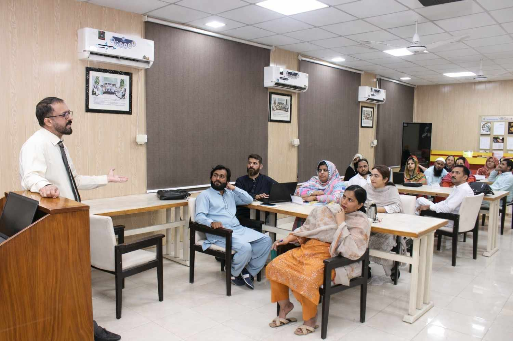
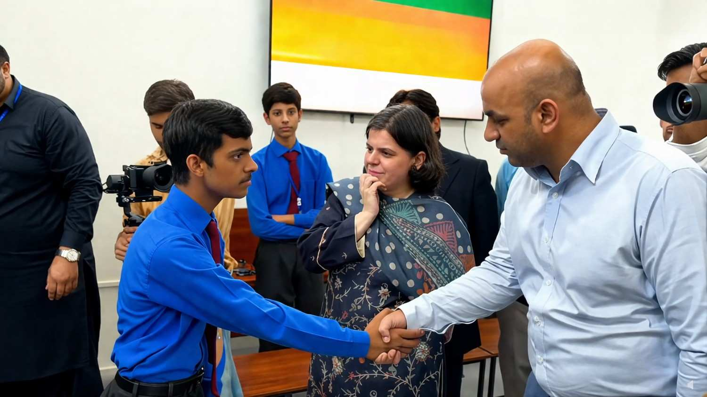
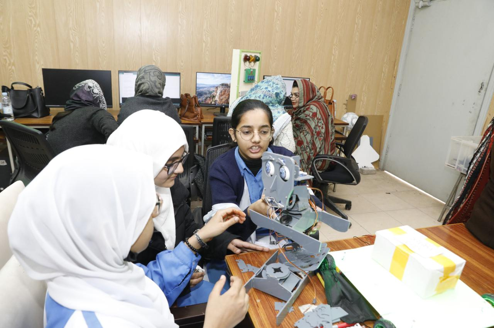
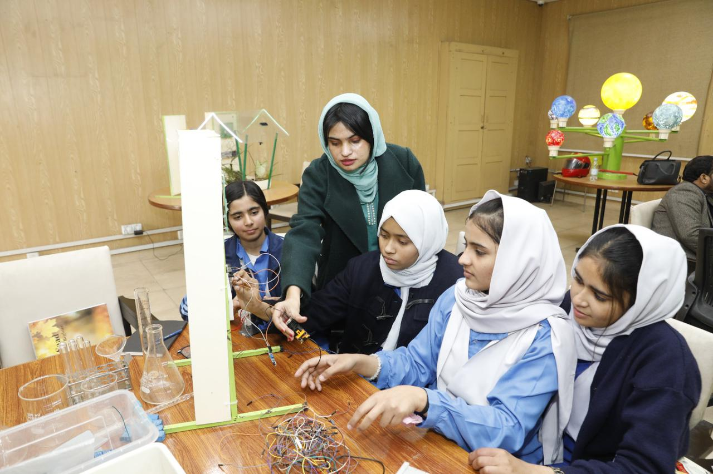
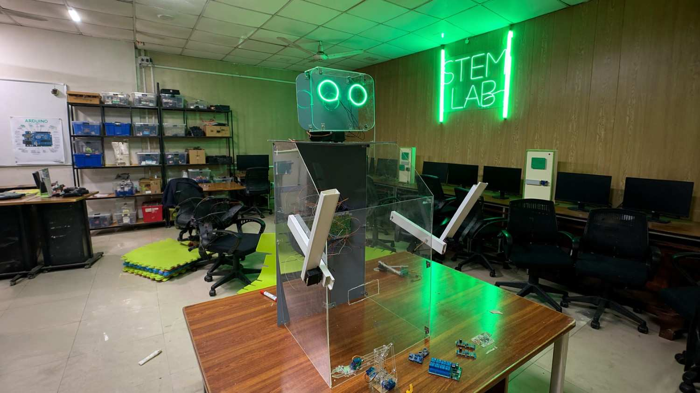
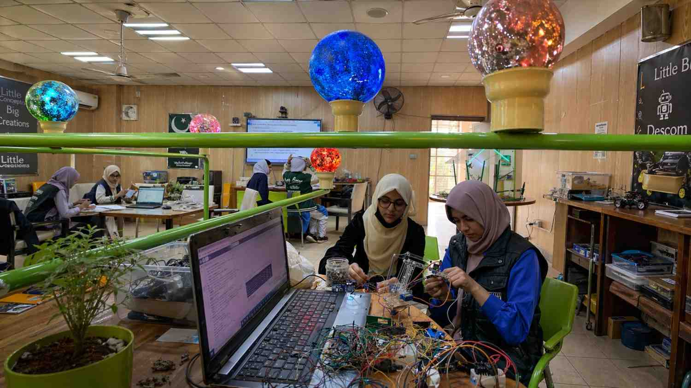
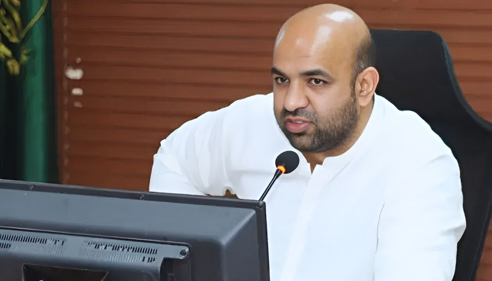
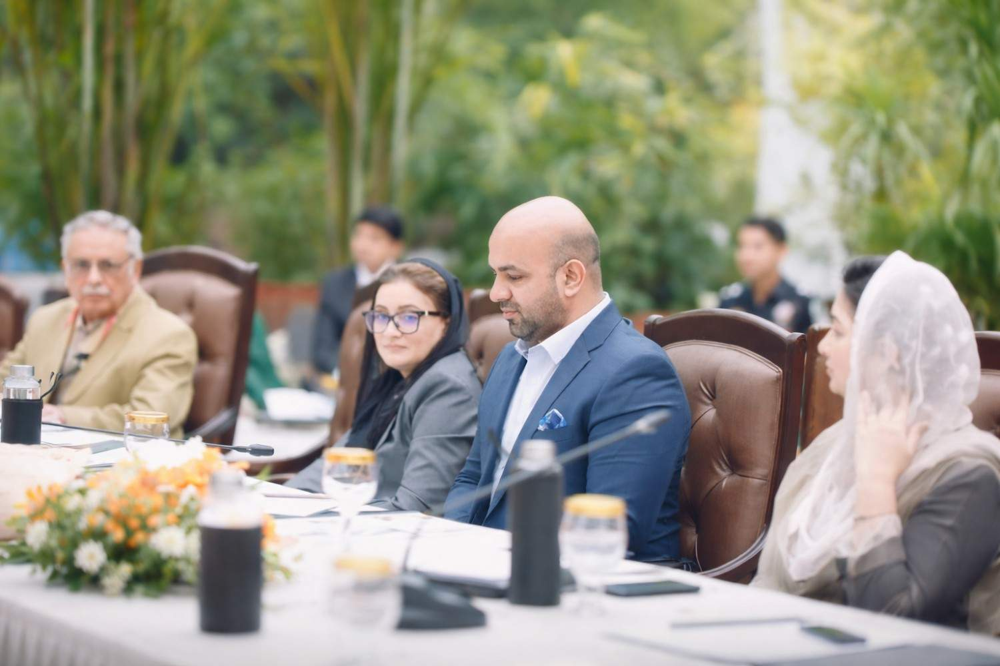
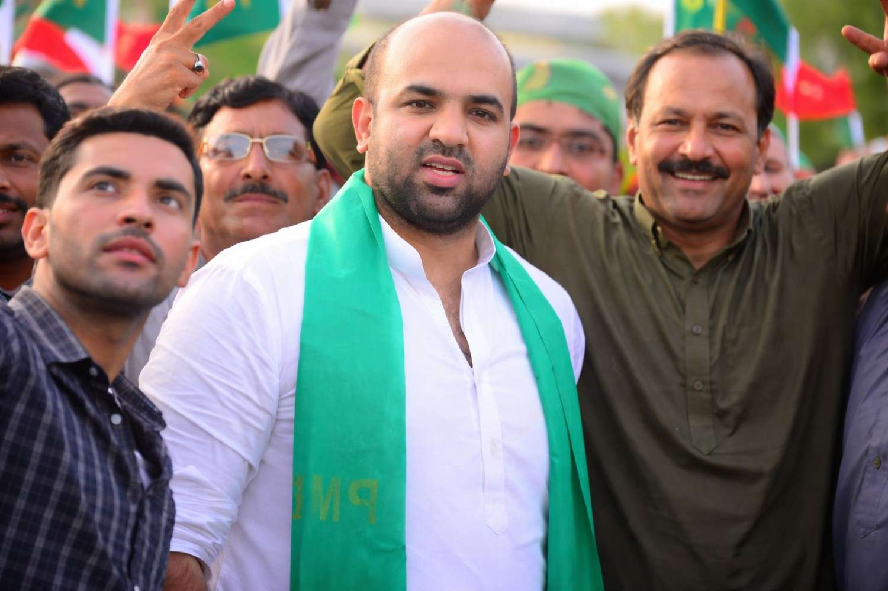

Key Achievements
Countless achievements define his legacy.


AI-Powered Learning Initiative — Google Gemini & Read Along
Successfully implemented Google AI Gemini and Read Along technology across Punjab's government schools, revolutionizing literacy and learning outcomes. This initiative has been recognized and appreciated by the World Bank as a model for educational technology adoption in developing regions.


Digital Literacy & EdTech Infrastructure Expansion
Expanded digital literacy programs and educational technology infrastructure across rural and urban schools in Punjab. Integrated cloud-based learning management systems, enabling seamless access to quality education resources for over 5 million students and ensuring no child is left behind in the digital education revolution.


Ghost Enrollment Elimination Drive
Led a landmark transparency drive eliminating nearly two million ghost enrollments from Punjab's education database, while rationalising 26,000 teachers to address real staff shortages — saving substantial public funds annually.


Honhaar Scholarship Program Launch
Launched the comprehensive Honhaar Scholarship initiative, providing financial support and laptops to thousands of deserving students across Punjab's public universities, including specialized programs at UVAS Lahore.


Smart Classrooms Rollout
Oversaw the rollout of smart classrooms with interactive displays, digital libraries, and technology-enabled learning environments across government schools in Punjab.








STEM Clubs & Lab Expansion
Led the expansion of STEM clubs and dedicated science labs in high and higher secondary schools across Punjab to strengthen hands-on learning in science, technology, engineering, and mathematics.

Teacher Excellence & Training Program
Launched comprehensive teacher training covering modern pedagogy, technology integration, and student-centric approaches — impacting over 100,000 educators across Punjab through merit-based hiring reforms.

Appointed Provincial Minister — Punjab Cabinet
Sworn into Chief Minister Maryam Nawaz's cabinet on 6 March 2024 as Provincial Minister for School Education. Later given additional charge of Higher Education (September 2024), overseeing Punjab's entire education stack.


Kasur Mayor — Education Ranking #1 in Punjab
As Chairman (Mayor) of Kasur District Council at just 28 years old — one of Pakistan's youngest ever mayors — he transformed Kasur's district education ranking from 17th–18th place in Punjab to #1 in the entire province within his two-year term.


Youngest District Mayor in Pakistan
Elected Chairman of Kasur District Council in May 2015 at the age of 28, making him one of the youngest district mayors in Pakistan's history. His tenure set a benchmark for youth-driven, results-oriented governance at the grassroots level.